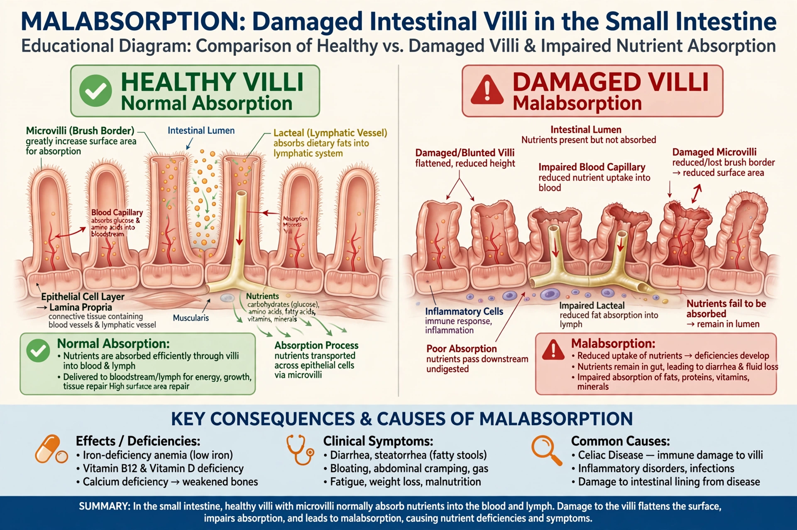

Malabsorption is a state arising from abnormality in absorption of food nutrients across the gastrointestinal tract. It causes diarrhoea, steatorrhoea (fatty stools), weight loss, bloating and deficiencies of vitamins, minerals and protein.

MalabsorptionCauses include mucosal diseases such as coeliac disease, enzyme deficiencies such as low lactase causing lactose intolerance, pancreatic insufficiency, bile acid problems, short bowel syndrome, infections and surgery. Specific carbohydrate problems include fructose malabsorption.
Investigation uses blood tests for deficiencies and anaemia, stool tests for fat and elastase, breath tests, endoscopy with biopsy and imaging. Treatment targets the cause — for example a gluten-free diet, pancreatic enzyme replacement, antibiotics or nutrient supplementation — and is often supervised by a pediatrician in children with failure to thrive.